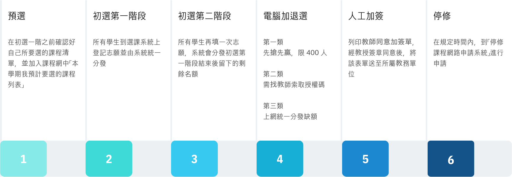
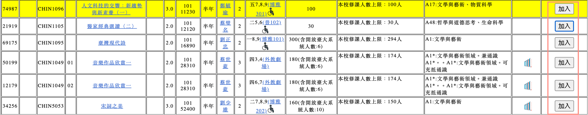
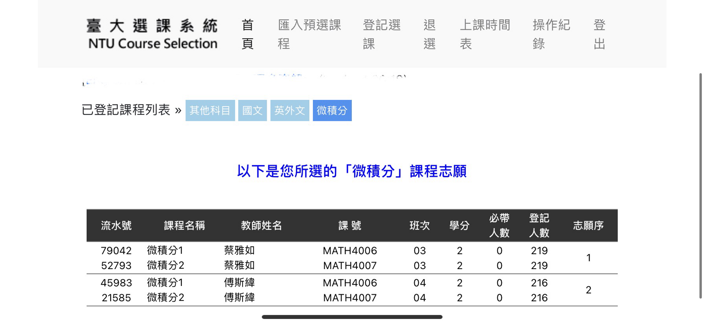
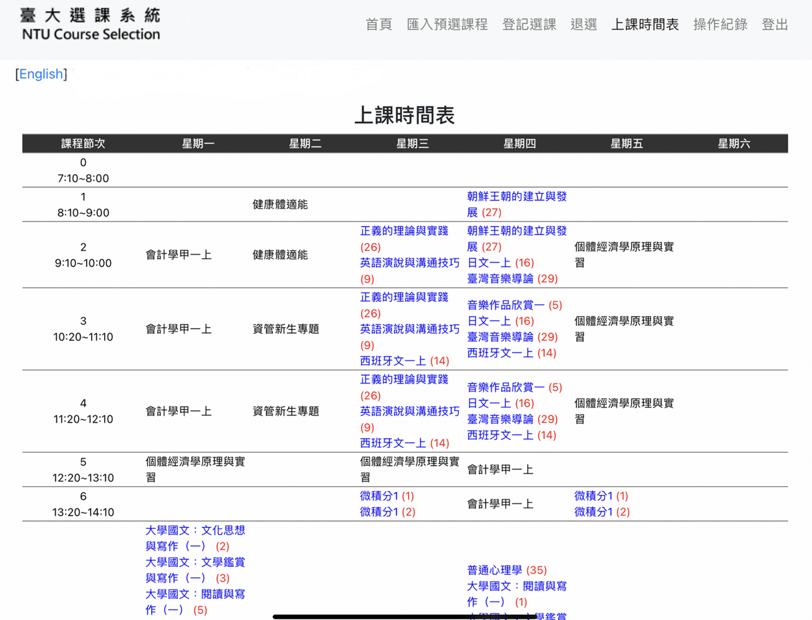
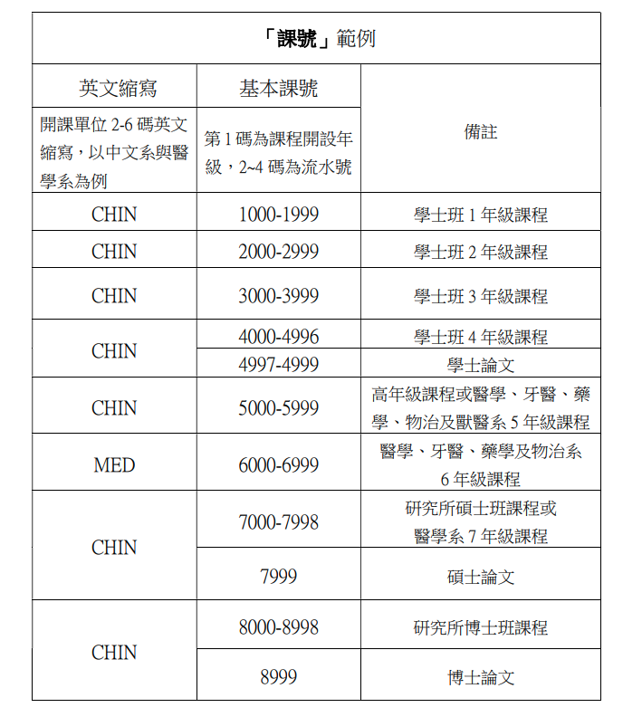

2023 台大新生選課 懶人包
作者：Benson Chiu aka 班森
benson_study_life 廢文流讀書帳的版主
台大資管系雙主修經濟系準備升大三的爆肝學生
喜歡教學、到各地旅遊，興趣領域是資料科學、軟體開發
我很討厭芋頭
2023/08/09 更新 - 補上遺失的圖檔
前言
這份選課懶人包含以下單元：
選課流程會簡單描述大家接下來將會遇到的一些重要時間點，以及在這個時間點各位需要完成的事項。
預選、初選、加退選、停修會著重於解釋大家在選課各階段操作步驟以及需要注意的重點
補充資訊包含共同課程的詳細介紹、名詞解釋、擋修處理與初選、三類加選分發機制
相關網站與實用資源會提供給大家「修課規定」、「選課」與「課程評價」等參考連結
希望這一份懶人包可以對各位新鮮人有所幫助！ 歡迎來到台大 : )
選課流程
概要

時程
預選
8/01 (二) ～ 8/17 (四)
什麼是預選？
所謂預選，就是指在初選一階之前確認好自己所要選的課程清單，並加入課程網中「本學期我預計要選的課程列表」。當我們將自己所要選的課程清單加入到這個列表過後，在選課期間，我們可以直接把這個列表匯入至選課系統的志願表中，我們到時候要做的事情就只剩下微小的調整和選填志願。

怎麼預選
進入台大課程網，並且登入計中帳號
詳細閱讀系所課程規定
各系所最新的課程規定與學分規劃可以到各系所必修科目及應修學分資料查詢
或是直接進入自己系所的網頁查看課程規定。以台大資管系為例，可參照此連結
每個系都會有自己的學分採計等的特別規定！務必要詳細閱讀，並且注意入學年份
[重要] 系所課程規定攸關你四年後的畢業門檻，如果你對任何課程規定有不清楚的情形出現，強烈建議直接詢問系辦！！！！
透過課程查詢系統，尋找並篩選你可能在這學期會修習的課程
課程快速查詢 ：可以透過區塊查詢本學期的所有課程
共同課程： 國文、外文、英文
系所課程 ：查詢各系所開設之必修、選修課
通識/新生專題/新生講座/基本能力
體育、軍訓
若想要將課程加入到「我預計要選的課程列表」，點擊課程清單右側的加入

點擊課程網左側的「預計要選的課」

便可查看「我預計要選的課程列表」

在該列表內的課程都可以被匯入至初選時會使用的「選課系統」，若要刪除，點選側邊欄的刪除鍵即可
台大目前亦有研發新版課程網，唯獨現在還在測試階段，要使用台大 IP 登入才能使用，故今年入學的新生需要拿到學生證並取得 VPN 後才能在校外登入新版課程網！
新課程網的使用說明：臺大新版課程網使用教學 - HackMD
學分上下限
大部分學士班科系 - 大一至大三最低 15 學分 / 大四最低 9 學分 / 最高 25 學分
有例外，請查閱學校規定
系排前 10％ 、GPA 3.9 以上或輔系 ：最高上限提高至 31 學分
雙主修 ： 最高上限提高至 33 學分
修課學分數上限會在初選二階調整！
也就是說：初選一階大家上限都是 25 學分
預選課表的小建議
一開始，可以先排入下述類型的課程：
被標註為「必帶」的必修課程
各班次時間相同的的必修課程
其他 100% 確定一定會選到的課程
排入完成後，查看自己空下來的時段，並排入自己有興趣的課程
預排的時候，不用擔心衝堂或者時間衝突的問題，分發機制會幫你解決好。
國文、英文、通識課都不好選，所以能排多一點課程，就排多一點課程
台大選課就跟賭博一樣，真的不要報太大期望
初選
初選一階 8/18（五）～8/21（一），每日 9:00～次日凌晨 3:00 初選二階 8/25（五）～8/26（六），每日 9:00～次日凌晨 3:00
台大選課系統連結（擇一進入）：
初選系統尚未公開，故只能用過去的截圖 (2021) 簡單說明 預計 08/19 晚上會開線上工作坊帶大家實際操作一次選課系統並介紹台大生活，歡迎大家參加！
系統操作說明
這是 2021 & 2022 年的系統，今年還不知道會不會改
當初選開始時，會有一個「進入初選一 / 二階」的按鈕，請直接點進去
進入選課網頁後，應該會看到如下方的畫面（下面為 2021年選課系統班森的實際截圖）

首頁：這邊會顯示您所選的課程列表，以「國文」「英外文」「微積分」「其他科目」區分
匯入預選課程：選課系統會自動從將您課程網中「本學期我預計要選的課程列表」匯入課程，您可以對於您具有登記資格的課程填寫志願序
志願序不要照順序填（如：1, 2, 3……)，宜採用跳號的方式（如：1, 3, 5, 7 …… / 1, 5, 10, 15……），這樣一來你之後想調整志願的次序時會方便非常多！ 系統是看數字的相對大小作志願分發的！
登記選課：輸入 「流水號」 or 「課號＋班次」將課程加入志願表
退選：如果你想要移除某些已經登記的課程，可以在這裡進行退選
可以退必帶嗎？ 是可以的！但是您自己要做好未來的課程規劃以便在畢業前可以修完這些課
健康體適能僅在上學期開設，通常選課系統會自動將健康體適能帶入各位新生大一上的學期課表。若因個人特殊因素無法隨班上課而退選，且欲選擇其他時段健康體適能課程，請先取得該時段授課教師同意後，再至體育室領取授權碼。
上課時間表：
你目前所選課程的概況，包含必帶課程（黑字）以及填好志願的課程（藍＋紅字）

加退選
加退選時程請見上方的 Google Calendar
加選網站和初選相同，皆為台大選課系統（擇一進入）：
加退選方式說明
在加退選階段，初選時各門課所設定的身分限制皆不適用，但第一類、第三類的先修科目限制為例外
| 加選方式 | 簡述 | 進行方式 |
|---|---|---|
| 第一類加選 | 課程加選以先搶先贏的方式進行，直到選課人數到達 400人 之上限。 | 在額滿前直接上網登記加選該課程 |
| 第二類加選 加簽大地 | 由各課程之授課教師所發放授權碼 | 上選課系統用該授權碼登記加選該課程 |
| 第三類加選 | 和初選類似，上選課系統登記分發 | - 若登記人數大於剩餘名額 → 隨機分發 - 若登記人數小於剩餘名額 → 全數錄取 |
| 人工加簽 | 填寫教師同意加簽單 | 列印教師同意加簽單，經教授簽章同意後，將該表單送至所屬教務單位 |
第二類加選小撇步
授權碼發放方式通常會寫在課程網的授課大綱、課程網站，或是公布於台大交流版 or 課程版 / ptt 等，記得一定要時刻關注
建議可以事先寄信給授課教師或者助教，老師們的 Email 都可以在課程網上找得到，務必信件內容要符合書信禮儀且有禮貌。
第一堂課務必要到上課現場，有些教授會在課堂上讓大家加簽（然後有可能第二堂課才去的話就不給你加選了）
停修
停修申請期限：11 月 24 日 部分課程另有規定（如微積分），依該門課自行之規定為準
在規定時間內，到「停修課程網路申請系統」進行申請，下載同意書給予任課教師與系所主管簽章，完畢後將申請表與同意文件合併後在期限內上傳至申請系統。
每學期停修以一科為限，若有特殊情況，可以填寫「學生報告書」
停修課程會在成績單上留下紀錄，但是不會計入學期 GPA
比較 退選 vs 停修
期限 成績單 學期成績 退選 09/18 08:00 不會出現 不會計入 停修 11/24 17:00 會出現 不會計入
補充資訊
初選分發規則
詳細規定請見 國立臺灣大學學生選課辦法 第十二條
課程種類間的分發順位
第一順位：國文領域：
上下學期皆採獨立之志願登記
登記人數超過各課程規定之修課人數上限時，依年級高低順序分發
未曾修讀國文領域課程學生，若尚有名額，再依年級高低順序分發
第二、三順位：外(英)文領域、微積分
第一學期皆採獨立之志願登記，第二學期與國文以外的課程共同登記分發
登記人數超過各課程規定之修課人數上限時，則以亂數分發
惟微積分得依開課單位規定保留部分名額予大二以上學生
第四順位：其他科目
先處理「一般通識」（不含兼通識的課程），再處理剩下的科目
通識課程分發規則
優先分發各學系的指定領域課程
一般通識課程每門課初選階段各保留四分之一名額予學士班一、二年級學生
餘額再依學生年級由高至低分配。但學士班學生優先於碩、博士班研究生
體育分發規則
必修學分 → 年級高低
其餘課程分發規則
身份別 → 年級高低
第三類加選分發規則
登記人數超過修課人數上限時
選修課：亂數
必修課：身份別 → 亂數
身份別
本系所或雙主修優先 → 輔系次優 → 不具前述身份之身心障礙學生第三→ 其它學生最後
若為英文授課之課程，以外籍生為第三優先，不具前述身份之身心障礙學生第四優先，其它學生最後
年級高低
課程 第一優先年級 第二優先年級 第三優先年級 第四優先年級 教育學程 大四,碩二, 博二及以上 大二, 大三, 碩一, 博一 其他 其他課程 大四,碩二, 博二及以上 大三, 碩一, 博一 大二 大一
全校共同課程
大一外文 [6 學分]
有些系可以選擇各國語言，有些系限修英文，需要注意
大一英文達到規定標準（滿足下列條件之一），可以免修
通過全民英語能力分級檢定中高級初試與複試；
托福網路測驗（TOEFL iBT）八十三分（含）以上；
國際英語測試（IELTS Academic）六點五級（含）以上；
英國劍橋大學中等英文認證（FCE 或 FCE for Schools）Grade B（含） 以上；
國際溝通英語測驗（TOEIC）聽讀總分八百六十五分（含）以上，口說 一百七十分（含）以上，寫作一百六十五分（含）以上；
外語能力測驗（FLPT）之英語測驗聽讀總分兩百十七分（含）以上， 口說 S-2+級分（含）以上，寫作 B 級分（含）以上；
TOEFL Essentials 八點五級（含）以上；
AP Exams English Language and Composition 或 English Literature and Composition 達到四級（含）以上；
英語為母語之僑外生，檢具小學和中學畢業證書，或至少就讀五年之正 式官方成績單（兩者皆須於國際處規範之英語系國家取得）
大一英文達到規定標準（滿足下列條件之一），可以參與免修考
「指定科目考試」英語科成績八十八分 （含）以上
「學科能力測驗」成績達十五級分並於「大學入學考試中心高中英語聽力測驗」獲得 A 級分
大學國文 [6 學分 或 3 學分 ＋ 3 學分 A1 ~ A4 通識]
大學國文達到規定標準（同時滿足下列條件），可以參與免修考
大學入學學科能力測驗國文達十五級分，且國寫知性題與情意題成績兩題皆達 A
通識 [15 學分 或 18 學分 - 視國文學分而定]
通識課程分為 A1 ~ A8 八大領域
兼跨兩個領域者，得選擇計入其中任一領域 應修習系所規定的三個指定領域課程，其餘可自由修習
可修習「溝通表達與職涯發展課程」以計入通識學分，至多6學分。
[重要連結]
進階英文一、二 [0 學分]
免修門檻較大一英文低
服務學習 [0 學分]
各系會有自己對於服務學習的規定，請自行參照各系所的規定
班森的話： 奉勸各位一定要聽系辦的話準時交作業！！！！不然服務學習真的會被當......（我就被當了）
體育 [4 學分]
活力體適能 1 學分 / 大一上學期的必帶課程
專項運動學群 3 學分 / 要自己到選課系統填志願
國防 [0 學分]
嚴格來說不算必修，但男生修國防課可以折抵兵役
詳細資訊可以閱讀 全民國防教育-課程資訊 (ntu.edu.tw)
名詞索引
系上課程規定會見到的課程種類
共同必修：全校各科系都要修的課程們 —— 包含：國文、外文、體育、通識、服務學習等等
系定必修：系上規定你「一定要修」的課
系定選修（或專業選修）：系上會提供給你一個名單，選擇裡面的課修滿規定學分
一般選修：可以任意選擇各院系的課程
課程網裡面會看到的名詞
必帶、必修、選修
必帶：選課系統直接幫你選好並且帶入到課表的課程
必修：雖然屬於必修課程，但還是要上網填志願
選修：系上的選修課程，可能會 兼通識，資訊標註於備註欄
選課限制
不是所有加入課程網的課程都可以加入志願序，舉例來說
| 選課限制 | 加入到課程網 | 本系大一生 | 外系大一生 |
|---|---|---|---|
| 初選不開放 | O | X | X |
| 限本系所學生 (含輔系、雙修生) | O | O | X |
| 限外系（所）學生 | O | X | O |
| 限學士班三年級以上 | O | X | X |
| 限本系所學生(含輔系、雙修生), 本校修課人數上限：100 人 | O | O | X |
| 本校修課人數上限：100 人 | O | O | O |
| 本校修課人數上限：70人, 外系人數限制：10人 | O | O | O |
[冷知識] 課號、課程識別碼
簡單來說，每一門課都有「課號」跟「課程識別碼」
課號的編號方式：

識別碼的編號方式：

先修科目規定（擋修）

部分系所的課程會設定先修科目規定，限制同學必須要修習完畢指定課程並達成規定成績才能修讀該課
有先修科目規定的課程，在初選第二階段結束後會被系統擋修
被擋修的處理方法：
第一、第三類加選之課程：
下載並填寫「解除擋修申請書」經授課教師及開課單位主管簽章同意，在規定期限內送至教務單位
第二類加選之課程：
下載並填寫「解除擋修申請書」經授課教師及開課單位主管簽章同意，在規定期限內送至教務單位
直接找授課老師索取授權碼後登記選課
相關網站與實用資源
選課規定與相關文件
選課網站
課程評價
學分學程與領域專長

This work is licensed under a Creative Commons Attribution-NonCommercial-NoDerivatives 4.0 International License. 本著作係採用創用 CC 姓名標示-非商業性-禁止改作 4.0 國際 授權條款授權.